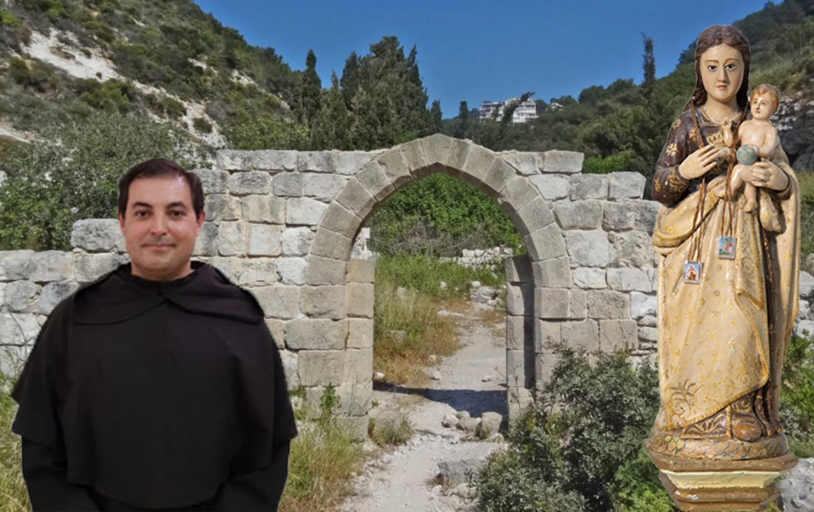

<!DOCTYPE html>
<html lang="PT"></html>

<head>
	<title>† Paróquia-SAC</title>

	<!-- Metas -->
	<meta charset="utf-8">
	<meta name="viewport" content="width=device-width, initial-scale=1.0">
	<meta name="description" content="Paróquia de Santo Antonio dos Cavaleiros">
	<meta name="keywords" content="paróquia de sac, sac">
	<meta name="author" content="RMoreno">
		
	<!-- Styles -->
	<link rel="icon" href="static/assets/images/favicon.ico" type="image/x-icon">
	<link rel="shortcut icon" href="static/assets/images/favicon.ico" type="image/x-icon"/>
	<link rel="stylesheet" href="static/css/bootstrap.css" type="text/css" media="screen">
	<link rel="stylesheet" href="static/css/bootstrap-responsive.css" type="text/css" media="screen">    
	<link rel="stylesheet" href="static/css/supersized.core.css" type="text/css" media="screen">  
	<link rel="stylesheet" href="static/css/style.css" type="text/css" media="screen">
	<link rel="stylesheet" href="static/css/camera.css" type="text/css" media="screen">

	<!-- JS -->
	<script type="text/javascript" src="static/js/jquery.js"></script>  
	<script type="text/javascript" src="static/js/jquery.easing.1.3.js"></script>
	<script type="text/javascript" src="static/js/superfish.js"></script>
	<script type="text/javascript" src="static/js/jquery.ui.totop.js"></script>
	<script type="text/javascript" src="static/js/supersized.core.3.2.1.js"></script>
	<script type="text/javascript" src="static/js/camera.js"></script>
	<script type="text/javascript" src="static/js/jquery.mobile.customized.min.js"></script>
	<script type="text/javascript" src="static/js/camera.wrap.js"></script>
	

</head>

<body class="main">
	<div id="main">
		<div id="inner">
			
			<div class="container">
				<div class="row">
					<div class="span12">
						<header class="clearfix">
							<div class="logo_wrapper">
								<!-- <a href="index.html" class="logo"> -->
																		
								</a>							
							</div>
						</header>	
					</div>	
				</div>	
			</div>
			
			<div class="top1">
				<div class="container">
					<div class="row">
						<div class="span12">
							<div class="navbar navbar_">
								<div class="navbar-inner navbar-inner_">
									<a class="btn btn-navbar btn-navbar_" data-toggle="collapse" data-target=".nav-collapse_">
										<span class="icon-bar"></span>
										<span class="icon-bar"></span>
										<span class="icon-bar"></span>
									</a>
									<div class="nav-collapse nav-collapse_ collapse">
										<ul class="nav sf-menu clearfix">					
											<li><a href="index.html">Início</a></li>
											<li class="sub-menu sub-menu-1"><a>Paróquia<em></em></a>
												<ul>
													<li><a href="bio-pedromonteiro.html">Pároco</a></li>
													<li><a href="index-4.html">Conselho Pastoral</a></li>
													<li><a href="index-5.html">Conselho Económico</a></li>
													<li><a href="index-2.html">História</a></li>																		
												</ul>						
											</li>
											<li><a href="index-6.html">Acção Pastoral</a></li>
											<li class="active"><a href="index-3.html">Comunidade Carmelita</a></li>
											<li><a href="contactos.html">Contactos</a></li>
											<div style="padding-top: 20px;">	
    											<a href="mailto:paroquia.sac@mail.pt" target="_blank">
        											
    											</a>
    											<a href="https://www.facebook.com/paroquiasac#" target="_blank" class="social-icon">
        											
    											</a>
    											<a href="https://www.youtube.com/channel/UCJoe96Is6j8rYWz3oHnvGqA" target="_blank" class="social-icon">
        											
    											</a>
											</div>
										</ul>
									</div>
								</div>
							</div>	
						</div>	
					</div>	
				</div>

				<div id="slider2">
					
					
				</div>
			</div>

			<div class="top2">
				<div class="slogan">
					<div class="container">
						<div class="row">
							<div class="span9">
                                <h1 class="titulo_tabela">Comunidade Carmelitas</h1>
                                <div class="txt1">
    								<p>"Cada Ordem toma o seu nome de um lugar ou de um Santo", escreve João Baconthorp, 
										Carmelita Inglês do séc. XIV. No caso dos Carmelitas, recebem o nome devido ao Monte Carmelo, 
										Monte da Palestina, junto do Mediterrâneo e da Baía de Haifa, pois foi aí que viveram os 
										primeiros monges, junto da fonte de Elias.
									</p>
									<p></p>	
									<p>A Ordem Carmelita é uma Ordem Religiosa Católica de Homens e Mulheres que, 
										inspirados pelo espírito do Profeta Elias e da Bem-Aventurada Virgem Maria, tentam viver 
										uma vida no seguimento de Jesus Cristo através da Contemplação, Fraternidade e 
										Serviço no meio do povo.
									</p>
									<p align="center"></p>
								</div>
								<h1 class="titulo_tabela">Frades Carmelitas</h1>
								<div class="txt1">
									<p>"Os Carmelitas vivem o seu obséquio a Cristo, empenhando-se na busca do rosto de Deus 
										vivo (dimensão contemplativa da vida), na fraternidade e no serviço (diakonia) no 
										meio do povo." É este o propósito e a missão, estabelecida nas suas Constituições, 
										que os carmelitas tentam realizar, há cerca de trinta anos, na Paróquia de Santo 
										António dos Cavaleiros.
									</p>
									<p></p>
									<p>Ao longo de todos estes anos os Carmelitas empenharam-se em construir uma verdadeira 
										Comunidade, uma verdadeira Igreja não só na sua dimensão espiritual, bem como na sua 
										dimensão física, ou seja criando diversas estruturas: a construção de um Templo para 
										a celebração da fé, bem como estruturas adjacentes para o funcionamento das diversas 
										áreas e serviços da Paróquia.
									</p>
									<p></p>
									<p>Ao longo destes cerca de 30 anos muitos frades e padres trabalharam nesta Paróquia 
										tentando realizar o que há cerca de 800 anos, em Israel, no Monte Carmelo e há cerca 
										de 700 anos em Portugal, motivou os Carmelitas: "o serviço no meio do povo". 
										Tal como no passado, também hoje, a Comunidade Carmelita que aqui vive e trabalha, 
										está ao serviço desta parcela do povo de Deus que é a Paróquia de Santo António dos 
										Cavaleiros, com ela caminhando e respondendo ao apelo da Igreja para a Nova Evangelização.
									</p>
									<p></p>
									<p>Actual Comunidade de Frades Carmelitas de Santo António dos Cavaleiros.
									</p>
									<br>
									<div class="row-fluid">
    									<div class="span2 offset1" align="center">
      										<a href="bio-agostinhocastro.html">             							
                    							
            								</a>
            								<br>
            								<a class="txt4" href="bio-agostinhocastro.html"><strong>Frei Agostinho Castro</strong></a>
    									</div>
    									<div class="span2" align="center">
      										<a href="bio-freiantonioalves.html">             							
                    							
            								</a>
            								<br>
            								<a class="txt4" href="bio-freiantonioalves.html"><strong>Frei António Alves</strong></a>
    									</div>
    									<div class="span2" align="center">
      										<a href="bio-rogeriostorres.html">             							
                    							
            								</a>
            								<br>
            								<a class="txt4" href="bio-rogeriostorres.html"><strong>Frei Rogério Torres</strong></a>
    									</div>
										<div class="span2" align="center">
      										<a href="bio-manuelcastro.html">             							
                    							
            								</a>
            								<br>
            								<a class="txt4" href="bio-manuelcastro.html"><strong>Frei Manuel Castro</strong></a>
    									</div>
									</div>
								</div>
								<h1 class="titulo_tabela">Irmãs Carmelitas</h1>
								<div class="txt1">
									<p>A Congregação das Irmãs da Virgem Maria do Monte Carmelo é uma família religiosa de 
										Direito Pontifício e pertence à Ordem do Carmo desde as suas origens.
									</p>
									<p></p>
									<p>O Carisma Missão é fraternidade contemplativa e serviço profético no meio do povo. 
										Esta vocação ao Carmelo vivida com simplicidade evangélica constitui a essência 
										do ser da congregação e a razão do seu existir na Igreja.
									</p>
									<p></p>
									<p>Procura viver em atitude de busca e discernimento, trata de descobrir o Mistério 
										de Deus no meio deste povo onde o Senhor a colocou. Com as Irmãs carmelitas 
										pretende ser a expressão de uma Fraternidade Carmelita, com a Comunidade Paroquial, 
										com todo o povo. tornar presente o Senhor e colaborar na sua acção em todos para a 
										extensão do Reino. Tudo isto por meio da oração, da partilha, do acolhimento na 
										Igreja e no serviço, de modo particular, com as crianças e idosos.
									</p>
									<p></p>
									<p>Grupo de Irmãs Carmelitas.
									</p>
									<p align="center"></p>
							</div>	
						</div>	
					</div>
				</div>
			</div>
			
			<footer>
				<div class="container">
					<div class="row">
						<div class="span12">
							<div class="bot1">
								<div class="row">
									<div class="span3">
										<div class="block1 pad_bottom">
											<div class="logo_wrapper2"><a href="index.html" class="logo2"></a></div>
											<br>
											<p>
												Avª. Francisco Pinto Pacheco,<br>
												Apartado 1071.<br>
												2661-901 Santo António dos Cavaleiros<br>
												Telephone: +351 21 988 43 66<br>
												E-mail: paroquiasacavaleiros@gmail.com<br>
											</p>
										</div>
									</div>
									<div class="span3">
										<div class="block2 pad_bottom">
											<div class="bot_title">Onde saber mais:</div>
											<ul class="ul0">
				  								<li><a href="servicos-secretaria.html">Secretaria Paroquial<br>(marcação de missas ou<br> outros assuntos)</a></li>	
											</ul>
										</div>
									</div>
									<div class="span3">
										<div class="block3 pad_bottom">
											<div class="bot_title">Informações</div>
											<ul class="ul0">
				  								<li><a href="catequese.html">† Catequese</a></li>
				  								<li><a href="liturgia-sacramentos-batismo.html">† Batismo</a></li>
				  								<li><a href="liturgia-sacramentos-matrimonio.html">† Matrimónio</a></li>
				  								<li><a href="liturgia-sacramentos-santauncao.html">† Santa Unção</a></li>
											</ul>
										</div>
									</div>
									<div class="span3">
										<div class="block4 pad_bottom">
											<div class="bot_title">Segue-nos</div>
											<ul class="ul_social">
				  								<li><a href="https://www.facebook.com/paroquiasac#"><span>Facebook</span></a></li>
				  								<li><a href="https://www.youtube.com/channel/UCJoe96Is6j8rYWz3oHnvGqA"><span>YouTube</span></a></li>
												<li><a href="https://www.instagram.com/paroquiasac/"><span>Instagram</span></a></li>
											</ul>
										</div>
									</div>
								</div>
							</div>	
							<div class="bot2">
								<div class="pad_bottom copyright" align="center">
									<div>Copyright © <span id="currentYear"></span> Paróquia de Santo António dos Cavaleiros <a class="copyright txt4" href="politicaprivacidade.html">Politica de Privacidade.</a></div>
									<script>
  										// This line finds the span and fills it with the current 4-digit year
  										document.getElementById('currentYear').textContent = new Date().getFullYear();
									</script>
								</div>
							</div>	
						</div>	
					</div>	
				</div>
			</footer>
		</div>	
	</div>
	<!-- JS -->
	<script type="text/javascript" src="static/js/bootstrap.js"></script>

</body>

</html>
